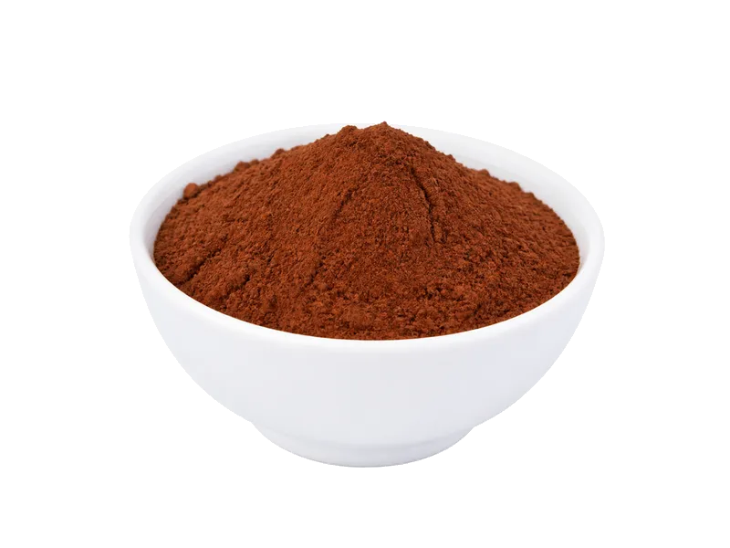

Polskie obiadki
Kakao (proszek) - Decomorreno
Kakao (proszek) - Decomorreno: 23.5 g białka, 303 kcal, 13 g węglowodanów i 10.5 g tłuszczu na 100 g. Kategoria: Polskie obiadki.
Kalorie303 kcalna 100 g
Białko / proteiny23.5 g
Węglowodany13 g
Tłuszcz10.5 g
Cena (szac.)~3,50 złza 100 g
Ceny zaktualizowano: sierpień 2026 (szacunek — ceny w popularnych supermarketach)
Porcja: porcja (300g)
| Kalorie | 909 kcal |
|---|---|
| Białko | 70.5 g |
| Węglowodany | 39 g |
| Tłuszcz | 31.5 g |
| Cena (szac.) | ~10,79 zł |
Szczegółowe składniki odżywcze na 100 g
| Wartość energetyczna (kalorie) | 303 kcal |
|---|---|
| Białko (proteiny) | 23.5 g |
| Węglowodany | 13 g |
| Tłuszcz | 10.5 g |
| Tłuszcze nasycone | 3.7 g |
| Tłuszcze nienasycone | 6.8 g |
| Witaminy i minerały (skrót) | Miedź, Mangan, Żelazo |
| Współczynnik kcal / 1 g białka | 12.9 |
| Cena produktu (szac. za 100 g) | ~3,50 zł |
| Cena za 100 g białka (szac.) | ~15,30 zł |
Witaminy i minerały na 100 g
Ilość w 100 g produktu oraz orientacyjny % dziennego zapotrzebowania (RDA) dla dorosłej osoby. Żelazo wg normy dla kobiet; sód jako % limitu. Wartości typowe (USDA / tabele żywieniowe / etykiety) — mogą się różnić między markami.
-
Witamina E 0.4 mg
-
Witamina K 2 µg
-
Witamina B1 (tiamina) 0.08 mg
-
Witamina B2 (ryboflawina) 0.24 mg
-
Witamina B3 (niacyna) 2.2 mg
-
Witamina B5 0.7 mg
-
Witamina B6 0.07 mg
-
Witamina B9 (foliany) 24 µg
-
Wapń 73 mg
-
Żelazo 11.9 mg
-
Magnez 228 mg
-
Fosfor 308 mg
-
Potas 715 mg
-
Cynk 3.3 mg
-
Selen 2.5 µg
-
Miedź 1800 µg
-
Mangan 1.7 mg
-
Sód 20 mg